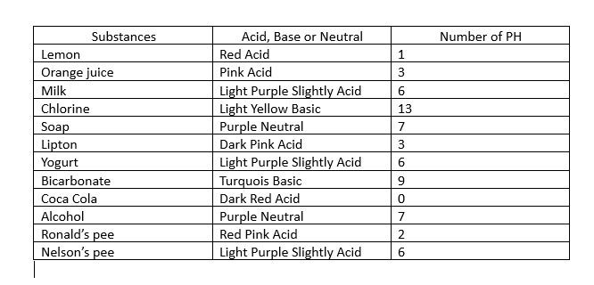

| Start | Introduction and hypothesis | Materials and procedure | Results and conclusions |
|---|
|  |
ConclusionThis project demonstrated the importance and usefulness of the pH scale in measuring the acidity or alkalinity of various substances. By testing different materials, we were able to observe how pH values range from acidic (0–6), neutral (7), to basic (8–14). |